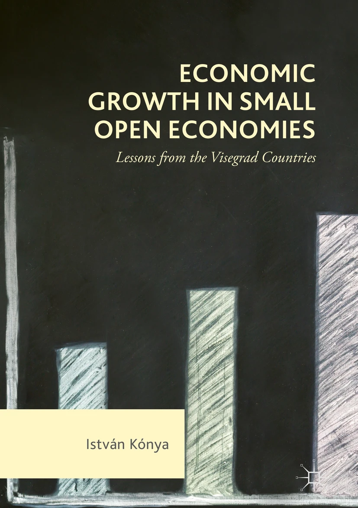

Book

Economic Growth in Small Open Economies
Lessons from the Visegrad Countries
István Kónya · Palgrave Macmillan Cham · 2018
This book studies the economic growth and development of four Visegrad economies (Czech Republic, Hungary, Poland and Slovakia) between 1995-2014. The first part of the book is structured around the concept of production function, factor inputs and growth accounting, and the second part of the book looks at selected problems related to economic developments of the analysed countries.
Book chapters
Economic Growth & Resilience
in: Central and Eastern European Economies and the War in Ukraine
István Kónya · Péter Benczúr · 2024
This chapter looks at the overall macroeconomic and social situation of the CEEE at the onset of Russia’s aggression on Ukraine and over the consecutive 18 months.
Convergence to the Centre
in: Emerging European Economies after the Pandemic
István Kónya · Péter Benczúr · 2022
This chapter focuses on the main macroeconomic developments in the Emerging European Economies (EEE) group leading up to and during the Covid-19 pandemic, and also on the longer-term outlook after the crisis.
Journal articles
Which sectors go on when there is a sudden stop? An empirical analysis
István Kónya · Miklós Váry · Journal of International Money and Finance, 146(C) · 2024
This paper analyzes the dynamics of sectoral Real Gross Value Added (RGVA) around sudden stops in foreign capital inflows.
Catching up or getting stuck: convergence in Eastern European economies
István Kónya · Eurasian Economic Review, 13(2), 237-258 · 2023
The paper studies the convergence and growth behavior of 11 Central and Eastern European members states of the European Union between 2000–2019, using a modified development accounting approach based on the neoclassical growth model.
An Open Economy DSGE Model with Search-and-Matching Frictions: The Case of Hungary
István Kónya · Zoltán Jakab · Emerging Markets Finance and Trade, 52(7), 1606-1626 · 2016
This article builds and estimates a medium scale, small open economy DSGE model augmented with search-and-matching frictions in the labor market, and different wage setting behavior in new and existing jobs.
Development accounting with wedges: the experience of six European countries
István Kónya · The B.E. Journal of Macroeconomics, 13(1), 245-286 · 2013
The paper interprets the growth experience of three Western European countries (France, Germany and the UK) and three Central-Eastern European economies (the Czech Republic, Hungary, and Poland) through the lens of the neoclassical growth model.
Convergence, capital accumulation and the nominal exchange rate
István Kónya · Péter Benczúr · Journal of International Money and Finance*, 37(C), 260-281 · 2013
This paper develops a flexible price, two-sector growth model with a nominal side to study the role of the exchange rate in transition dynamics.
Optimal Immigration and Cultural Assimilation
István Kónya · Journal of Labor Economics, 25(2), 367-391 · 2007
This article develops a model that examines the role of cultural conflict in immigration and immigration policy.
International Consumption Patterns among High‐income Countries: Evidence from the OECD Data
István Kónya · Hiroshi Ohashi · Review of International Economics, 15(4), 744-757 · 2007
This paper examines the effect of economic integration on the product‐level consumption patterns across the OECD in the past decade.
Modeling Cultural Barriers in International Trade
István Kónya · Review of International Economics, 14(3), 494-507 · 2006
The paper presents a model that analyzes the role of cultural differences in international trade.
Minorities and majorities: a dynamic model of assimilation
István Kónya · Canadian Journal of Economics, 38(4), 1431-1452 · 2005
The paper analyses the population dynamics of a country that has two ethnic groups, a minority and a majority, and minority members can choose to assimilate into the majority.
Paste the following after the final entry in your existing Journal articles section:
Other publications
The Connection between Institutions and Economic Development – the Work of the 2024 Nobel Laureates in Economics
István Kónya · Financial and Economic Review, 24(1), 132-155 · 2025
This essay reviews the contributions of Daron Acemoglu, Simon Johnson and James Robinson to understanding the formation of institutions and their effects on long-run economic development.
Interview with Professor Christopher D. Carroll
Christopher D. Carroll · Áron Kiss · István Kónya · MNB Bulletin, 9(1), 58-64 · 2014
An interview with Christopher D. Carroll about household consumption and saving, heterogeneous-agent models, mortgages and macroeconomic policy.
Interview with Harald Uhlig
Harald Uhlig · István Kónya · Katalin Szilágyi · MNB Bulletin, 8(1), 62-67 · 2013
An interview with Harald Uhlig about macroeconomics, financial markets, Bayesian econometrics and the role of central banks during crises.
Interview with Fabio Canova
Fabio Canova · István Kónya · Katalin Szilágyi · MNB Bulletin, 7(3), 73-78 · 2012
An interview with Fabio Canova about quantitative macroeconomics, time-series methods, international business cycles and forecasting.
Wage setting in Hungary: evidence from a firm survey
Gábor Kézdi · István Kónya · MNB Bulletin, 4(3), 20-26 · 2009
Using the Eurosystem Wage Dynamics Network survey, the article shows that Hungarian firms operate in a flexible institutional environment but display relatively rigid wage-setting practices.
Hungarian publications
A bérhányad alakulása Magyarországon és Európában
István Kónya · Gábor Oblath · Judit Krekó · Közgazdasági Szemle, 68(10), 1021-1054 · 2021
The paper examines labor-share developments in Hungary and Europe, with particular attention to sectoral composition, employers’ social contributions and the role of relative prices.
Külkereskedelem, regionális különbségek és a képzettek vándorlása
István Kónya · Közgazdasági Szemle, 66(6), 635-652 · 2019
The paper analyses the relationships among foreign trade, regional development differences and the geographical mobility of skilled workers.
A magyar növekedésről – egy régimódi megközelítés
István Kónya · Közgazdasági Szemle, 64(9), 915-929 · 2017
Starting from the fundamental questions of growth theory, the paper reviews the Hungarian economy’s growth experience over the preceding two decades.
Növekedés és pénzügyi környezet
István Kónya · Dániel Baksa · Közgazdasági Szemle, 64(4), 349-376 · 2017
Using an estimated stochastic neoclassical model, the paper studies the roles of technology, growth and interest-premium shocks in Hungary’s economic growth between 1995 and 2015.
Munkapiaci áramlások Magyarországon és Európában
István Kónya · Közgazdasági Szemle, 63(4), 357-379 · 2016
The paper proposes a method for identifying macroeconomically relevant labor-market transition probabilities from aggregate stock data.
Több gép vagy nagyobb hatékonyság? Növekedés, tőkeállomány és termelékenység Magyarországon 1995–2013 között
István Kónya · Közgazdasági Szemle, 62(11), 1117-1139 · 2015
The paper recalculates total factor productivity in Hungary and decomposes GDP growth into contributions from capital, productivity and human capital.
Kamatfelár, hitelválság és mérlegalkalmazkodás egy kis, nyitott gazdaságban
Péter Benczúr · István Kónya · Közgazdasági Szemle, 60(9), 940-964 · 2013
The paper analyses how a small open economy adjusts following a sudden deterioration in external financing conditions.
Munkapiaci súrlódások DSGE-modellekben
István Kónya · Zoltán M. Jakab · Közgazdasági Szemle, 59(9), 933-962 · 2012
The paper reviews how search-and-matching frictions can be incorporated into dynamic stochastic general equilibrium models.
Növekedés és felzárkózás Magyarországon, 1995–2009
István Kónya · Közgazdasági Szemle, 58(5), 393-411 · 2011
The paper uses growth accounting to analyse Hungary’s growth and convergence performance between 1995 and 2009.
Nominális növekedés egy kis, nyitott gazdaságban
István Kónya · Péter Benczúr · Közgazdasági Szemle, 52(6), 556-575 · 2005
The paper uses a small-open-economy growth model with nominal variables to examine the relationship between the exchange rate and real economic convergence.
Családok és iskolák – az oktatáspolitika lehetőségei
István Kónya · Közgazdasági Szemle, 43(12), 1088-1103 · 1996
The paper places human-capital investment in a family decision framework and uses it to examine the potential effects of government education programmes.